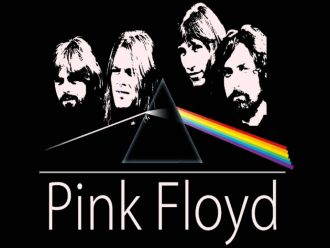

Лодку большую прадед нашРешил построить для внуков,Строил всю жизнь,Но не достроил её тот прадед наш,Оставил нашему деду,
I don't know where to find youI don't know how to reach youI hear your voice in the windI feel you under my skinWithin my heart and my soul
Se di giorno non ti pensoso che poi ritorneraicome ogni notte a tormentarela mia mente e i sogni mieiSe di giorno splende il sole
Serenata quasi a mezzanotteguardie e ladri che si fanno a bottee i ragazzi da solisono ancora romantici.Serenata per i separati
Un gatto bianco con gli occhi bluun vecchio vaso sulla TVNell'aria il fumo delle candeledue guance rosse rosse come mele.
Du pont des supplicesTombent les actricesEt dans leurs yeux chromésLe destin s’est brouillé
Voglio un amore che sappia di tecon quel gusto un po' amaro di un vino da rèun ricordo che sciolga i ricordi che ho
Там, где город высотой в полнеба,Там, мне крылья за спиной расправил ветер.Он позвал меня с собой туда, где свет,Где город даст ответ на все вопросы.

Breathe, breathe in the airDon't be afraid to careLeave but don't leave meLook around and choose your own ground
Money, get awayGet a good job with more pay and you're O.K.Money, it's a gasGrab that cash with both hands and make a stash
День молча сменит ночь за твоим окном, любимая мояСеет прохладу дождь мокрым серебром с приходом сентябряЗолотом листопад осыпает всю страну
День. Ночь.Не спешит в разлуке время.Серый дождьСтучит за окном.Как жаль,Не пойдут часы быстрее.Маленький двор
То ли рядом с шофёром, то ли в тесном купеЯ мотаюсь по жизни по великой стране.Позади километры оборванных струн,Впереди миражи неопознанных лун.
Gimme gimme, gimme just a little smile,that's all I ask of you.Gimme gimme, gimme just a little smile,we got a message for you.
Sing Hallelujah!A B C is like 1 2 3The beatThe rhythmThe bass Y'allCome onHappy people come onJam with meOh Lord
Don't leave me in all this painDon't leave me out in the rainCome back and bring back my smileCome and take these tears away
Things haven't been the sameSince you came into my lifeYou found a way to touch my soulAnd I'm never, ever, ever gonna let it go
[Bridge:]
Нам негде встречаться сейчас.Прошу, если можешь, прости.И всё, как назло, против нас,От этого нам не уйти.
Последний поезд - вагон пустой,Я помашу тебе вслед рукой,Ты растворишься опять в кольце темноты.Черта огней по стеклу бежит,
Come on, come onOhh, whow